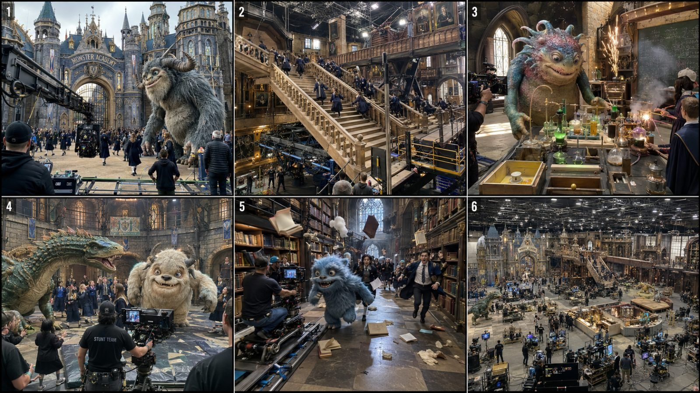

Back to all prompts
Hollywood blockbuster behind-the-scenes
Storyboard & Reference

Download Reference{kind=link}
Create an **ultra-photorealistic Hollywood blockbuster behind-the-scenes video** showing the filming of an enormous **[FANTASY / ADVENTURE / GIANT CREATURE MOVIE SCENE]** at a **real-world practical outdoor production location**. The result must look like authentic leaked BTS footage captured casually by a crew member during a real $150M–$250M Hollywood production — **NOT like a finished movie scene, NOT like CGI showcase footage, NOT like an AI-generated fantasy clip**.
## CORE VIDEO FORMAT
**Generator:** Seedance 2.5
**Duration:** exactly 15 seconds
**Aspect ratio:** vertical 9:16 unless another ratio is specifically requested
**Capture identity:** raw iPhone 17 Pro Max rear-camera video
**Perspective:** third-person observer / crew-member perspective
**Camera operator:** unseen
**Camera distance:** approximately 3–20 meters depending on action
**Movement:** believable handheld walking, slight body sway, tiny micro-shakes, occasional quick reframing caused by action
**No cinematic dolly perfection, no drone unless specifically requested, no artificial orbit shots, no impossible camera movement.**
The iPhone should behave naturally: subtle autofocus breathing, small auto-exposure corrections, realistic highlight clipping, slight rolling shutter during fast movement, natural motion blur, minor lens flare when facing strong practical lights, occasional foreground obstruction from crew or equipment, mild digital sharpening, realistic phone dynamic range, imperfect framing and authentic depth perception.
## MASTER CONCEPT
The scene is the **behind-the-scenes filming of [MOVIE_SCENE]**, inspired by the scale and excitement of premium Hollywood fantasy, creature, survival and adventure blockbusters while remaining a completely original fictional production.
Main attraction:
**[GIANT_CREATURE / FANTASY_ENTITY]**
Examples:
giant dragon, prehistoric beast, enormous gorilla, 70-foot serpent, sea monster, kraken, giant troll, griffin, phoenix, stone colossus, enormous magical animal, mechanical beast, giant forest guardian, ice monster, sky whale, dinosaur-like predator or completely original fantasy creature.
The creature must feel **massive compared with real humans, vehicles, architecture and production equipment**. Scale should be immediately understandable.
## REAL-WORLD LOCATION LOCK
Film at **[REAL_LOCATION_TYPE]**, such as:
a giant coastal quarry, jungle valley, mountain canyon, abandoned industrial harbor, desert basin, medieval castle backlot, tropical river, cliffside fortress, forest clearing, giant water tank beside the ocean, practical village set, outdoor ruined-city backlot or huge open studio lot.
The location must retain physical reality:
uneven ground, mud, gravel, wet concrete, vegetation, wind, dust, real sky, clouds, distant terrain, vehicles, portable toilets, production trailers, generators, catering tents, equipment carts and temporary safety fencing where appropriate.
Do not make the world look like a perfect fantasy painting.
## GIANT PRACTICAL CREATURE BTS LOCK
The giant creature should look **mostly completed and movie-ready from the filming side**, while believable practical filmmaking evidence remains visible from BTS angles.
Include details such as:
hydraulic neck or jaw mechanisms, servo-driven facial movement, reinforced steel skeleton hidden beneath textured creature skin, cable control systems, support rigs, motion platforms, puppeteer stations, crane suspensions, partial mechanical sections visible from behind, creature technicians, creature effects supervisors and stunt safety teams.
Do **not** expose so much machinery that the creature stops feeling alive.
The illusion should be:
> “Holy hell, that giant creature looks real — but I can also see how a Hollywood crew is filming it.”
## HOLLYWOOD MEGA-PRODUCTION SCALE
The filming environment must feel enormous.
Naturally include several of the following:
50–150 crew members in the wider background, camera department, stunt team, practical FX team, creature operators, assistant directors, lighting crew, safety coordinators, water safety divers, riggers, grips, special effects technicians, production monitors, director station, camera carts, tracking vehicles, techno-cranes, boom lifts, telescopic cranes, scaffolding, hydraulic platforms, stunt mats, crash pads, cables, hoses, smoke machines, rain towers, water cannons, dust cannons, wind machines, fire bars, breakaway set pieces and emergency equipment.
Crew must behave naturally.
Some work.
Some watch monitors.
Some hold cables.
Some prepare the next stunt.
Some move equipment.
Nobody randomly stares into the iPhone camera.
## MAIN ACTION LOCK
There must be **real physical action occurring during filming**, not a static creature display.
Primary action:
**[MAIN_ACTION]**
Possible actions:
creature attacks an expedition convoy, giant beast fights another creature, dragon attacks castle gate, dinosaur chases moving vehicles, kraken strikes a ship, gorilla battles a serpent, giant troll attacks a bridge, creature crashes through a practical building façade, sea monster rises beside a ship, phoenix launches from a temple, giant creature pursues stunt performers or a fantasy battle unfolds around the creature.
The action must have clear cause-and-effect physics.
Example:
creature swings arm → impacts breakaway wall → plaster and timber debris falls → stunt performers react → camera crew continues tracking.
No random explosions unrelated to the action.
## STUNT PERFORMERS + ACTORS
Use **original fictional adult performers**, never recognizable celebrities.
Actors wear production-appropriate wardrobe matching **[MOVIE_WORLD]**:
explorers, fantasy soldiers, medieval warriors, scientists, rescue crew, adventurers, sailors, expedition members, villagers or stunt doubles.
They must interact physically and believably with the set.
Actors should run, duck, pull ropes, jump behind cover, climb practical structures, evacuate vehicles or perform choreographed combat depending on the scene.
Keep the action exciting but non-graphic.
No gore.
No visible severe injury.
## PRACTICAL FX REALISM
Effects should look like genuine on-set practical effects:
compressed-air dust bursts, controlled fire jets, real water splashes, breakaway walls, falling lightweight rubble, smoke, sparks, wind, rain, vehicle movement, rope rigs, mechanical creature movement and controlled stunt impacts.
The BTS camera should occasionally catch technicians activating or resetting these effects.
## 15-SECOND VIRAL STRUCTURE
### 0.0–2.0 SEC — INSTANT WTF HOOK
Open immediately on the impossible giant Hollywood spectacle.
Do not begin with empty crew activity.
Show the creature already towering over actors, attacking a set, entering frame, roaring, emerging from water or beginning a fight.
The viewer should instantly think:
**“Is this a real movie being filmed?”**
### 2.0–5.0 SEC — SCALE + BTS REVEAL
The iPhone operator naturally steps sideways or slightly backward.
Reveal cranes, crew members, control cables, camera rigs and practical set infrastructure while the creature continues moving.
Never stop the action just to reveal BTS equipment.
### 5.0–9.0 SEC — MAJOR ACTION PAYOFF
Execute the biggest physical stunt.
Examples:
giant creature strikes a vehicle,
dragon fire rig blasts across courtyard,
kraken tentacle crashes onto deck,
monster breaks through wall,
two creatures collide,
dinosaur charges past camera team,
gorilla throws breakaway prop.
Combine creature motion, actor reaction and practical FX.
### 9.0–12.5 SEC — CREW REACTION + SECOND BEAT
Camera operator reacts naturally and reframes.
Show stunt performers escaping while camera crew continues filming.
A practical effect, smaller creature motion or secondary impact happens.
Allow one technician, assistant director or camera operator to briefly enter foreground.
### 12.5–15.0 SEC — GIANT BTS REVEAL / LOOPABLE END
Finish with a wider third-person reveal showing:
giant creature + active set + camera rigs + cranes + crew + actors + practical FX aftermath.
Creature should still subtly move at the end so the video feels alive.
Optional ending:
assistant director calls reset,
creature jaw slowly closes,
stunt crew approaches,
water settles,
smoke drifts across frame.
## CAMERA ANGLE PRIORITY
Use the **best third-person BTS angle where both the movie illusion and filmmaking process can be seen simultaneously**.
Prefer:
low three-quarter angle beside camera crew,
medium-wide shoulder-height view behind stunt team,
slightly elevated platform angle,
edge-of-water tank perspective,
crew-side view across practical set,
tracking behind a camera operator.
Avoid placing the phone perfectly centered.
Foreground obstruction from a crew shoulder, monitor edge, cable or crane arm is desirable in moderation.
## CREATURE MOTION
Creature movement must obey weight and inertia.
Large creatures cannot move like weightless game characters.
Include:
slow body momentum,
delayed limb follow-through,
heavy foot placement,
skin/fur secondary movement,
muscle compression,
water displacement,
dust displacement,
realistic head stabilization,
mechanical limitations consistent with practical effects.
For massive creatures, speed should feel powerful rather than unnaturally fast.
## ENVIRONMENTAL CONTINUITY
Maintain the exact same:
creature design,
creature scale,
crew wardrobe,
actors,
weather,
lighting direction,
location,
set damage,
camera position logic,
vehicles,
equipment and practical rigs
throughout the entire 15 seconds.
No teleportation.
No changing anatomy.
No disappearing cranes.
No regenerated buildings.
No duplicate actors.
No random costume changes.
## FANTASY / ANIMATION-INSPIRED VISUAL DESIGN
The world may contain extravagant fantasy elements:
whimsical architecture,
giant academy buildings,
oversized mushrooms,
floating-looking structures supported by practical rigs,
magical laboratories,
fantasy airships,
giant creatures,
colored potion props,
enchanted forests,
ornate bridges,
ancient temples,
dragon fortresses,
monster schools or strange vehicles.
However, render all fantasy production elements as **real physical movie sets and practical props photographed in the real world**.
Think:
**animated imagination translated into an enormous live-action Hollywood production.**
Not cartoon.
Not Pixar-like rendering.
Not Unreal Engine.
Not video-game graphics.
## AUDIO
Use raw location production audio only.
Include a realistic combination of:
crew chatter in background,
distant assistant director calls,
hydraulic motors,
creature mechanical groans,
heavy footsteps,
water splashes,
wind,
metal rig creaks,
vehicle engines,
controlled explosions,
actors shouting,
stunt impacts,
camera cart movement,
radio chatter,
natural environmental ambience.
No soundtrack.
No cinematic score.
No narrator.
No subtitles.
No exaggerated monster sound design unless produced naturally through practical playback speakers on set.
## REALISM MICRO-DETAILS
Include imperfections such as:
mud on crew boots,
wet cables,
tape markings,
sandbags,
gaffer tape,
numbered equipment cases,
coffee cups beside monitors,
safety cones,
scratched metal platforms,
damp costume fabric,
dust stuck to practical creature skin,
water dripping from rigs,
crew radios clipped to belts,
headsets,
temporary plywood ramps,
orange extension cables,
production tents,
generator noise,
small puddles,
wind moving flags and costume fabric.
These details should exist naturally and never dominate the shot.
## ORIGINALITY LOCK
Create an original fictional blockbuster world.
Do not directly recreate copyrighted movie characters, signature creatures, famous franchise costumes, exact sets, logos or recognizable actors.
Capture only the **scale, craftsmanship and excitement associated with premium Hollywood fantasy/adventure filmmaking**.
## STRICT NEGATIVE PROMPT
No cartoon look, no Pixar style, no anime, no videogame render, no Unreal Engine look, no glossy CGI creature, no plastic skin, no toy miniature appearance, no fake AI smoothness, no fantasy poster composition, no perfect symmetry, no floating humans, no broken anatomy, no duplicate people, no warped faces, no extra limbs, no morphing creature, no scale inconsistency, no teleportation, no disappearing equipment, no random costume changes, no weightless monster motion, no impossible physics, no uncontrolled gore, no visible text overlays, no captions, no watermark, no cinematic black bars, no fake depth-of-field overload, no excessive lens flare, no perfectly stabilized gimbal movement, no drone shot unless requested, no invisible production environment, no empty studio, no static monster posing.
## USER INPUT VARIABLES
**MOVIE WORLD:** [FANTASY / ADVENTURE / PREHISTORIC / MONSTER / SCI-FI / FAIRYTALE / OCEAN / DARK FANTASY]
**MAIN LOCATION:** [REAL LOCATION]
**GIANT CREATURE:** [CREATURE]
**CREATURE SIZE:** [HEIGHT / LENGTH]
**MAIN ACTION:** [ACTION]
**ACTORS / STUNT TEAM:** [WHO IS IN THE SCENE]
**PRACTICAL FX:** [WATER / FIRE / DUST / COLLAPSING SET / RAIN / EXPLOSIONS]
**KEY SET PIECE:** [CASTLE / SHIP / TEMPLE / BRIDGE / LAB / SCHOOL / CONVOY / VILLAGE]
**TIME / WEATHER:** [DAYLIGHT / SUNSET / CLOUDY / STORM / SNOW / RAIN]
**FINAL BTS REVEAL:** [WHAT THE CAMERA REVEALS AT THE END]
### FINAL QUALITY COMMAND
The final result must be indistinguishable from **raw real-world iPhone footage recorded by a crew member standing inside a gigantic active Hollywood fantasy/adventure production**, where an enormous practical creature and real stunt performers are filming a dangerous-looking blockbuster action sequence directly in front of the phone.
The fantasy must feel impossible.
The filmmaking must feel completely real.
The scale must feel enormous.
The action must never stop.
The viewer must believe for several seconds that they are watching **actual leaked behind-the-scenes footage from a giant Hollywood movie production.**